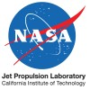

Technical Experience
AT&T
June 2022-August 2022
Data Analyst Intern
El Segundo, CA
- Mined high level results data and provide recommendations using Power BI
- Recommended new strategies in the area of data and cost analysis around business deliverables that affect customer servicing items, inventory control, employee morale
- Analyzed data for Field Operations, identifying patterns on customer cancellations
- Transformed data from Excel to web application using Python, cutting down load time by 300%
AT&T
June 2021-August 2021
Technical Business Manager Intern
El Segundo, CA
- Created new website for AT&T TV organization with information on agile software engineering
- Reorganized department roster and contact information from Excel to SQL database
- Coordinated with sales and migration development teams on product release schedules
- Managed workflow metrics using Jira for an Agile Release Train with 100+ members

NASA Jet Propulsion Laboratory
February 2020-March 2021
Software Engineer Intern
Pasadena, CA
- Created quarterly report on website metrics using Google Analytics on all NASA websites
- Posted and maintained exclusive content on Mars sites following accessibility standards
- Created new virtual interactives and products on mars.nasa.gov to promote an online launch; reached 4.6 million pageviews on launch day
- Managed design of Instagram AR filters for Mars 2020 launch on NASA (60 M followers)
- Communicated with News Chief to release breaking news from NASA
- Published monthly Mars newsletter with revamped layout; increased click rate by 200%